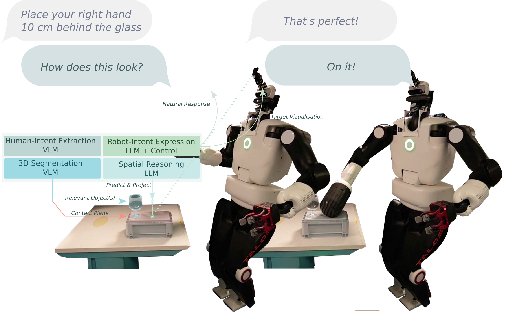
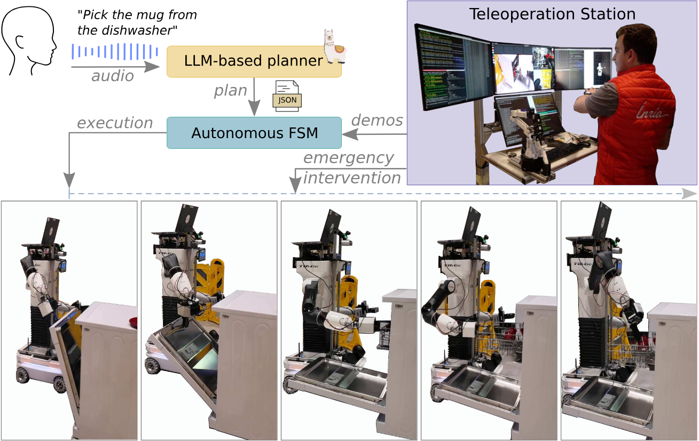
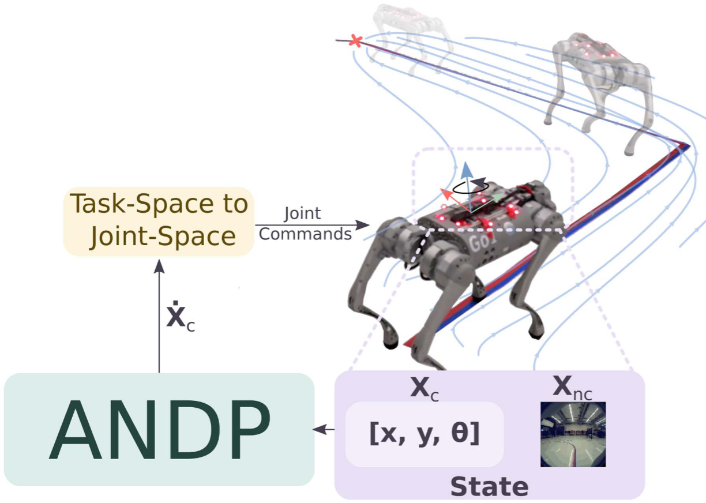
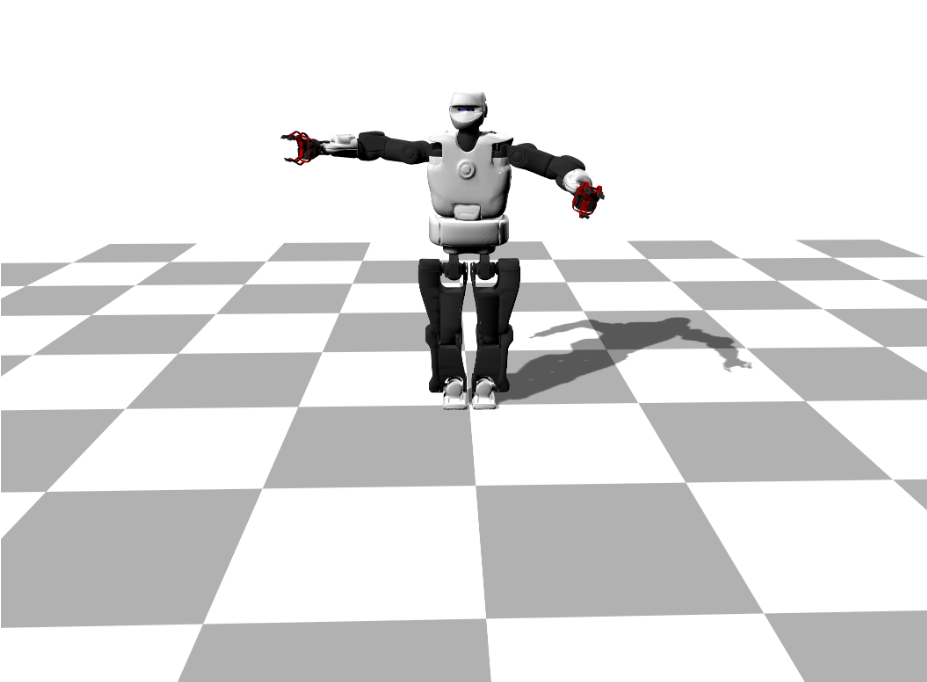
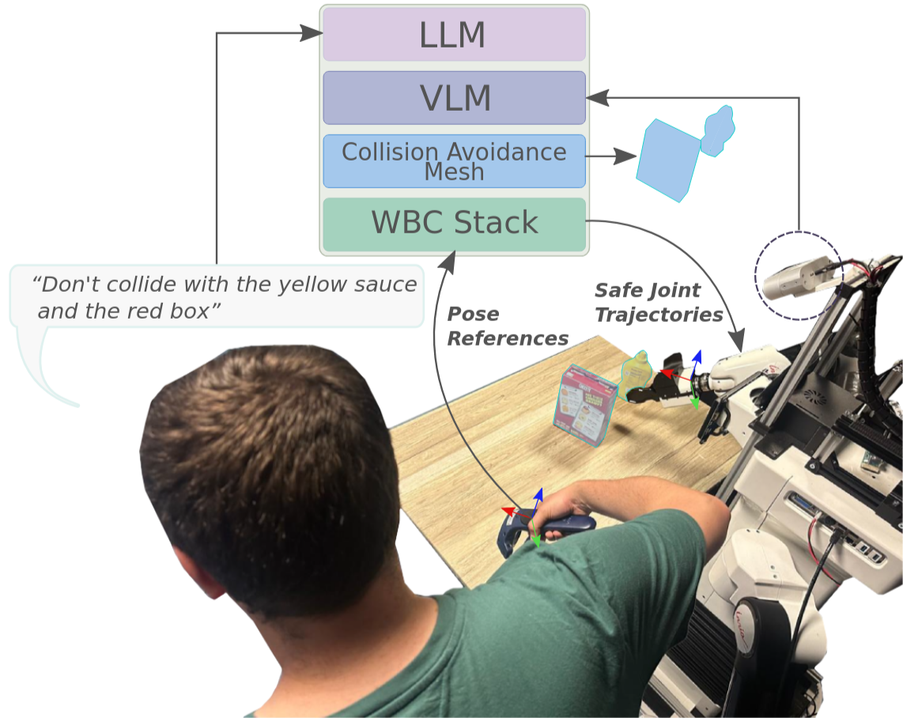
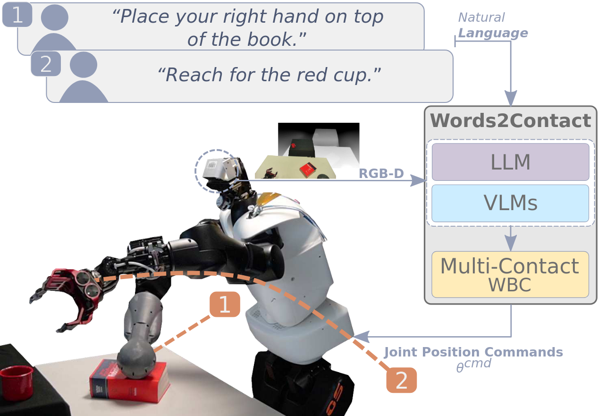
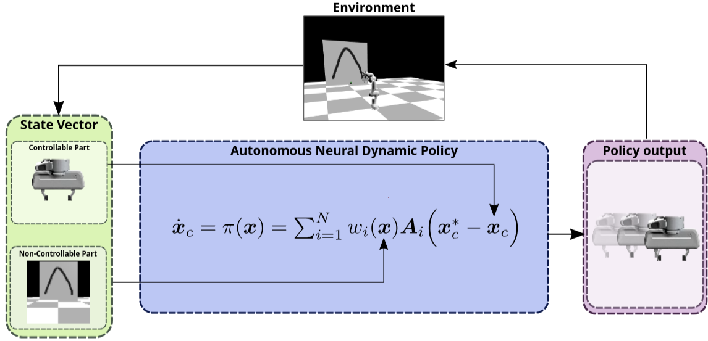

Publications
Pre-prints (Under Review)

LaserAttention: Vision-Language Models for Joint Attention in Human-Robot Interaction
Dionis Totsila, Clemente Donoso, Quentin Rouxel, Jean-Baptiste Mouret, Serena Ivaldi
Peer-reviewed Journal Papers



Peer-reviewed Conference Papers


Peer-reviewed Workshop Papers

Patents
Talks & Presentations
- Sensorimotor learning with stability guarantees via autonomous neural dynamic policies — Short talk and discussion,
- Sensorimotor learning with stability guarantees via autonomous neural dynamic policies — Abstract presentation,